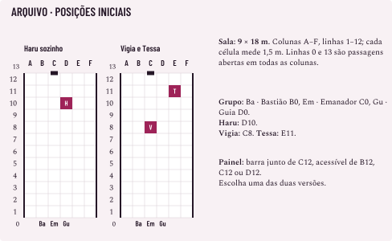
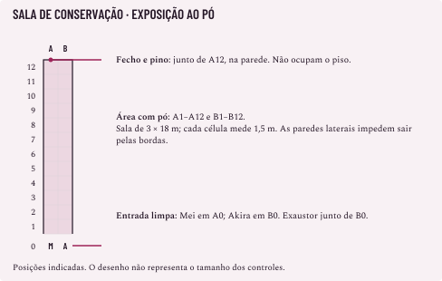

Prova parcial: lote B2-05. Fontes antigas e edição integrada anterior preservadas.
CONSULTA DO MESTRE
Haru, Vigia e Tessa
Fichas experimentais de nível 15. Leia com Inimigos de níveis mais altos e o confronto do arquivo. Prepare Haru sozinho ou Vigia e Tessa juntos. Colocar os três no mesmo encontro é outra composição, que ainda precisa ser avaliada.
São humanos contratados para guardar um arquivo de contratos. A disputa pode terminar por autorização, acordo, retirada ou incapacitação. Nenhum precisa morrer para os documentos serem recuperados.
As capacidades de energia e as montagens dos feitiços usam o Livro de Regras 1.0. Vida, reservas de PE, combinação de capacidades e comportamento são propostas próprias destas fichas. A ficha de Haru permite dois ataques; isso não concede Ataque Extra a todo inimigo de nível 15. Não recebem habilidades ocultas de Caminho, Trilha ou Origem, nem podem ser convertidos em personagens jogadores apenas copiando estes valores.
Características dos três guardas
Todos são Médios, têm alma, dois braços e mãos, fala, visão e audição comuns e sentidos de energia do Livro de Regras 1.0. Haru pesa 78 kg, Vigia 74 kg e Tessa 62 kg. Não possuem resistência, imunidade, cura passiva, Domínio, invocação ou redução permanente. Como não são maldições, não podem ser domados.
Atletismo +6, Percepção +5, Sentir Energia +5, Intuição +7
Atletismo +6, Percepção +4, Sentir Energia +4, Intimidação +4
Percepção +7, Sentir Energia +7, Intuição +5, Persuasão +7
Carga normal / arrasto máximo
9 / 18 Volume
9 / 18 Volume
5 / 10 Volume
Equipamento
Espada Longa de uma mão, 1 Volume; Traje 1, 0,3
A mesma combinação
Traje 1, 0,3 Volume; mãos livres
A Defesa é 10 + Destreza 3 + Traje 1. Demais perícias conservam seus atributos e requisitos, sem treino adicional presumido; não há Ofício treinado relevante. A espada é comum. Canalizar permite ferir maldições com ela, sem transformá-la em ferramenta permanente.
Cada ficha recebe Padrão, Movimento, Bônus e Reação comuns. A Reação se renova no começo do próprio turno. Antes de cada ataque rolado contra si, escolhe entre a Defesa e Bloquear. Bloquear não gasta Reação e não substitui um TR. A comparação numérica do confronto usou sempre a Defesa; na mesa, as duas opções continuam valendo.
Energia e respostas
Canalizar Energia: os ataques físicos compatíveis acrescentam 2d4, sem ação ou PE. Os dados já constam abaixo. Não dobram no crítico e não entram nos feitiços.
Cobrir-se de Energia: depois de determinar o dano de um golpe contra si, antes de descontá-lo, paga Reação e 2 PE para reduzir 6. O Traje conserva sua proteção; a proteção passiva de energia não se soma a ele. Sem Reação ou sem 2 PE, essa redução fica indisponível.
Kokusen: num crítico corpo a corpo com arma ou desarmado, role d100; o limite inicial é 8, o dobro do Refino 4. Cada teste de Kokusen que falhar acrescenta +2 aos seguintes, até o descanso longo. Se ocorrer, acrescente 50% ao dano final após as defesas, para cima. As fichas começam sem bônus acumulado. Feitiços não recebem Kokusen. A comparação numérica não inclui essa ocorrência; durante a sessão ela continua válida.
Leitura de Reservas revela os PE atuais. As contas de usos desta ficha são exemplos de gasto da mesma reserva, não cargas separadas. Vigia, por exemplo, tem energia para sete Cobrir-se somente se não gastar PE de outra forma e tiver sete oportunidades com Reação disponível. Não reduz sete golpes na mesma rodada.
Haru
Haru guarda o acesso ao arquivo e tenta fazer o grupo abandonar a extração. A faixa luminosa de sua técnica avisa onde virá a contenção. Ele pode trocar de plano quando o grupo sair da área; não recebe acerto garantido porque preparou um golpe.
Espada Longa
Atacar: até dois golpes a 1,5 m, +6, cada um com 1d8 + 4 + 2d4 de Cortante; crítico 2d8 + 4 + 2d4, antes de Kokusen. O segundo golpe é capacidade explícita desta ficha e integra a mesma Padrão. Não é guardado para oportunidade nem acrescentado a outra ação.
Pode substituir cada golpe por uma manobra comum permitida, TR Físico CD 14, conservando mão livre e demais requisitos. Um ataque de oportunidade continua sendo um único golpe. A espada usa Rompe quando a propriedade for aplicável a um objeto, sem dano extra contra pessoas.
Fita de contenção
A técnica tece faixas que apertam o corpo atingido. Usa Inteligência; Alcance e Castigo são Livres; Amparo, Auxiliares e Marca estão Fechadas. Área e Controle usam preço normal. O Selo é uma palavra audível e um gesto da mão livre. Impedir esse requisito impede conjurar; Agarrado sozinho não silencia nem ocupa todas as mãos.
Versão preparada
Classe 2
Ampliada para Classe 4
Ação / custo
Padrão / 6 PE
Padrão / 12 PE
Forma
Linha de 18 m por 1,5 m; origem a até 18 m
As mesmas medidas
Montagem
6 pontos − Linha 1 − Prende 2
12 pontos − Linha 2 − Prende 4
Dano
3d8 de Concussão
6d8 de Concussão
Resistência
TR Físico CD 15
TR Físico CD 15
Quem falha recebe todo o dano e Prende: não pode se deslocar voluntariamente até o fim do próprio turno seguinte. Quem passa recebe metade do dano, para cima, sem Prende. Não há ataque ou crítico nessa área. Todos os corpos na linha são afetados, inclusive aliados de Haru; a ficha não tem Escolher. A faixa não danifica o equipamento do arquivo nesta aplicação.
Preso, o alvo ainda pode atacar, conjurar e usar as demais ações. No próprio turno, o alvo pode gastar Padrão, Bônus ou Movimento para repetir o TR Físico CD 15; sucesso encerra a aplicação. Cada tentativa paga uma dessas ações. Não recebe TR gratuito no fim do turno. Movimento imposto pode deslocá-lo e conserva Prende. Cura não encerra essa aplicação.
Aviso e intervalo próprios de Haru: no fim de um turno em que possa agir, ele pode indicar a origem e a direção de uma única faixa. Uma projeção visível marca o chão, sem causar dano, bloquear passagem, revelar criaturas ou exigir PE. Essa indicação é uma limitação adicional do protótipo; não devolve pontos e não é Carregar.
Ele só pode conjurar Fita no turno seguinte, usando exatamente a origem e a direção avisadas. Nesse momento, precisa cumprir alcance, caminho, Selo, ação e energia. Pode escolher uma das duas Classes permitidas. Se desistir, for impedido ou não conjurar até o fim desse turno, o aviso expira. Mudar a direção exige outro aviso, sem aplicação imediata. A projeção também termina quando Haru fica Inconsciente ou Derrotado.
Depois de conjurar, deve passar um turno próprio inteiro sem usar Fita. Pode avisar a próxima faixa ao fim desse turno, não no turno da conjuração anterior. Exemplo: avisa no turno 1, conjura no 2, usa espada e avisa no 3, volta a poder conjurar no 4. O intervalo e os PE cumprem funções diferentes: o intervalo dá ao grupo tempo de responder; os PE pagam as conjurações e a proteção.
Anunciar a faixa não gasta ação: Haru pode atacar com a espada e anunciar no mesmo turno. Ao efetivamente conjurar, porém, gasta a Padrão e abre mão dos dois golpes daquela ação. Não existe ataque grátis no anúncio ou na resolução.
Quando Haru usa a técnica
Haru prefere a Classe 4 quando alcança dois adversários relevantes ou alguém que continua operando o arquivo. Se a faixa ficar vazia, escolhe espada, manobra, reposicionamento ou negociação. Um jogador que saiu da faixa realmente evitou o golpe; Haru não muda sua direção no último instante.
Com 26 PE, duas Fitas de Classe 4 deixam 2 para um Cobrir-se. Usar primeiro dois Cobrir-se deixa 22: já não cabem duas Fitas de 12. O mestre não precisa guardar energia apenas porque a ficha tem PE; guarda quando existe uma opção futura que vale esse custo. Se não houver, pode gastá-la. A contenção anunciada, o objetivo e a Padrão compartilhada continuam criando escolhas.
Vigia
Vigia mantém um adversário longe de Tessa e do arquivo. Usa Atacar com um golpe da mesma espada: +6, 1d8 + 4 + 2d4 de Cortante; crítico 2d8 + 4 + 2d4, antes de Kokusen. Pode trocar esse golpe por manobra comum, CD 14, com seus requisitos. Não possui Fita, feitiço ofensivo ou segundo ataque nesta ficha.
Sua função depende de posição e oportunidade. Não recebe ataque gratuito porque alguém conjurou perto. Se Tessa cair, tenta negociar ou se retirar; Desengajar usa sua Padrão. Ele pode guardar os 14 PE para Cobrir-se; não é preciso inventar um gasto ofensivo só para esvaziar a reserva.
Tessa
Sua técnica recompõe tecido vivo e ajusta o movimento de um aliado. Usa Essência; Amparo e Auxiliares Livres; Castigo, Controle e Marca Fechadas. Selo: palavra audível e gesto de uma mão livre. Os dois feitiços usam Projétil, alcançam um aliado disposto, visível e compatível a 9 m, inclusive a própria Tessa, com aplicação automática.
Feitiço
Ação, custo e efeito
Montagem
Remendo firme
Padrão, Classe 4, 12 PE. Cura 8d8, até o máximo. Não remove condição, recupera Integridade ou PE, nem reabre participação após Derrotado.
12 pontos − base Média 4 = 8; teto individual de 8d8. Sem Melhorias ou Restrições.
Orientar o golpe
Padrão, Classe 1, 3 PE. Impulso: vantagem no próximo ataque até o fim do próximo turno do beneficiário. Termina após a tentativa, acertando ou errando.
Impulso Leve 1; os 2 pontos restantes ficam sem uso. Sem base de cura ou vida temporária.
Impulso não favorece dano, TR ou Bloquear; não exige Concentração ou manutenção. A distância é conferida na concessão. A queda de Tessa não apaga antecipadamente um Impulso já concedido. Remendo é cura de sua técnica, sem conceder a aptidão Energia Reversa.
Com vida positiva e ferida, Tessa prioriza curar a si. Estando inteira, cura Vigia se ele estiver ativo e ferido; se ambos estiverem inteiros ou não puder pagar cura, oferece Impulso quando tiver um ataque útil para favorecer. Curar e conceder Impulso usam a mesma Padrão: ela não faz os dois no mesmo turno. Pode recusar uma cura pequena para proteger-se com Cobrir-se ou preservar uma conjuração posterior; registre essa escolha se comparar resultados.
26 PE permitem dois Remendos e um Cobrir-se, ou um Remendo, quatro Impulsos e um Cobrir-se. Gastar dois Cobrir-se antes do segundo Remendo já impede esse Remendo. Não há recuperação automática por rodada ou pela queda do parceiro.
Se precisar atacar, dá um golpe desarmado a 1,5 m: +2, 1d6 + 2d4 de Concussão; crítico 2d6 + 2d4, antes de Kokusen. Pode substituir o golpe por manobra comum, CD 10. Seu ataque modesto é uma saída, não sua contribuição principal.
Integridade e encerramento
Estágio
Haru, máximo 140
Vigia, máximo 60
Tessa, máximo 40
0
140–106
60–46
40–31
1
105–71
45–31
30–21
2
70–36
30–16
20–11
3
35–1
15–1
10–1
4
0
0
0
As penalidades são cumulativas. Estágio 1: desvantagem em perícias. Estágio 2: deslocamento pela metade e +1 PE por Classe nos feitiços. Estágio 3: desvantagem em ataques e TRs; Classe máxima cai de 4 para 2. Estágio 4: Derrotado.
No estágio 2, Haru paga 8 ou 16 PE por Fita. Com 26, já não cabem duas aplicações de Classe 4; no estágio 3, só a versão de Classe 2 continua disponível. Tessa paga 16 por Remendo e 4 por Impulso. No estágio 3, Remendo de Classe 4 fica indisponível: não há versão menor preparada nesta ficha. Cobrir-se continua custando 2 PE. Os ataques físicos conservam seus dados, com as penalidades pertinentes.
A zero de PV ou Integridade, cada inimigo fica Derrotado e deixa de atuar. O desfecho preparado é incapacitação, com inconsciência e queda dos itens segurados. Não recebem Aguentar, Insistir ou janela de socorro de jogador. Cura não restaura a participação de quem já foi Derrotado; o atendimento e o destino dos guardas precisam ser resolvidos depois.
Se os documentos forem retirados, os guardas aceitam interromper a luta para registrar quem assumirá responsabilidade. O mestre não cria reforço nem bloqueio da saída depois dessa vitória. Feridos, recursos gastos, efeitos ainda ativos e danos ao arquivo permanecem no registro.
O grupo precisa recuperar um registro de contratos antes de voltar à base. Os guardas querem conservá-lo até receberem autorização do contratante. Há informação suficiente para negociar quem ficará com os documentos; o conflito não precisa começar com um ataque.
O lugar e o objetivo
Prepare uma sala iluminada de 9 m por 18 m, piso regular, sem civis. Use seis colunas A–F e doze linhas 1–12, com espaços de 1,5 m; as linhas 0 e 13 são áreas de passagem com piso firme. Todas as colunas têm passagem livre para essas áreas. As paredes laterais fecham a sala. Não há cobertura inicial ou terreno difícil; deslocamentos diagonais seguem a mesma medida do Livro de Regras 1.0.
Elemento
Posição inicial
Grupo do exemplo
Bastião em B0, Emanador em C0, Guia em D0
Painel do arquivo
Fixado num suporte junto de C12, sem bloquear a área de passagem; acessível de B12, C12 ou D12. Não ocupa essas células.
Haru, na versão com guarda único
D10
Vigia e Tessa, na versão com dupla
Vigia C8; Tessa E11
Retirada
Qualquer saída para a linha 0 ou 13; sair da sala não concede Desengajar nem imunidade a oportunidades.

Escolha uma das versões antes da sessão. Não coloque a dupla depois da queda de Haru como reforço automático. O grupo pode observar a disposição e conversar da entrada; não há surpresa preparada.
Operar o arquivo: instruções legíveis explicam como retirar os registros com segurança, sem teste. Uma pessoa adjacente ao painel, com uma mão livre, precisa gastar três Padrões em três turnos próprios sucessivos, mantendo contato e posição entre eles. No terceiro, retira a caixa de registros, de 1 Volume, com os dados preservados. Não exige Concentração de feitiço ou PE.
Dano e Prende, sozinhos, não interrompem o trabalho. Perder a consciência, soltar o comando ou sair das células de acesso antes de concluir reinicia os três passos; a informação permanece recuperável. Outra pessoa pode recomeçar, mas não terminar os passos em nome do operador. Esses requisitos são deste equipamento e ficam visíveis antes da escolha. A operação não recebe um limite secreto de tempo.
Forçar o acesso: o fecho externo é um objeto pequeno de aço, Defesa 18, 5 PV, pelas tabelas de objetos do Livro de Regras 1.0. Está separado da caixa de dados. Quebrá-lo abre a tampa; depois, uma Padrão com mão livre retira a caixa, dispensando os três turnos de operação. Rompe se aplica a um ataque capaz de danificá-lo. O fecho não Bloqueia; Veneno e efeitos mentais/de alma não o danificam. Se outro tipo de dano tiver ajuste pelo material, registre-o antes. O dano no fecho não passa para a caixa. A marca de arrombamento ficará como consequência identificável, explicada ao grupo antes da tentativa.
Resolver pela conversa: se o grupo apresentar autorização verificável da escola responsável, os guardas permitem a operação e registram a retirada, sem exigir teste para negar um direito já comprovado. Sem autorização, aceitam uma proposta que identifique quem receberá os documentos e deixe um guarda acompanhar a entrega. Isso pode encerrar a oposição sem combate. Uma mentira ou condição contestada segue as regras de interação social do Livro de Regras 1.0, com a informação e a resistência reais; não há um único número que torne qualquer pedido aceitável.
Como os guardas usam o espaço
Haru procura alcançar o operador ou avisar uma Fita sobre o painel. A área de 18 m por 1,5 m pode começar num ponto válido a até 18 m dele e segue os obstáculos. Marque todas as células afetadas antes da resposta do grupo. Ele continua sujeito a alcance, Provocar, controle e impedimentos de conjuração; não recebe imunidade por ser a figura central da cena.
O aviso oferece uma escolha: manter a operação, procurar proteção, interromper Haru, sair e recomeçar ou forçar o fecho. Se todos saírem da faixa, Fita pode deixar de ser uma boa ação. Isso é resultado da informação oferecida, não falha a corrigir com um golpe escondido. Haru pode usar sua Padrão de outro modo, conforme a ficha.
Na dupla, Vigia ocupa o caminho e Tessa procura ficar a até 9 m dele, com visão e espaço para sair. Atacar Tessa pode cortar a cura e o Impulso; ignorá-la preserva essas opções. Ainda é preciso chegar até ela e agir. A prioridade de alvo da comparação abaixo não dá movimento gratuito a ninguém.
Encerramento: recuperar a caixa e conseguir sair com ela cumpre o objetivo. Os guardas aceitam cessar a oposição para acompanhar a responsabilidade pela entrega. Derrotá-los também encerra a luta, mas não retira automaticamente a caixa do painel. Se o grupo se retirar sem os documentos, registre o arquivo preservado e negocie a próxima abordagem; não há prazo escondido que transforme isso em derrota irreversível.
O que a comparação numérica mede
A comparação usa os três perfis de nível 15 da consulta Inimigos de níveis mais altos, em condições de atacar: começa com o grupo inteiro agindo antes dos guardas, cada um recebe uma Padrão e repete esse conjunto até três vezes. Os ataques miram a Defesa 14 dos guardas, sem cobertura, Bloquear ou Cobrir-se. Por isso, os resultados diferem dos da consulta de níveis mais altos, que usa outra Defesa. Na dupla, concentram-se em Tessa até ela cair e depois mudam para Vigia. Dano excedente de um golpe não passa para outro alvo; o próximo ataque pode escolhê-lo.
Depois de cada conjunto, contam-se os guardas ainda ativos. Na versão com cura, se Tessa estiver ativa e ferida, paga 12 PE para curar a si por 8d8; caso esteja inteira e a dupla ativa, paga 3 por Impulso. A reserva de 26 é descontada, sem reposição. A comparação sem cura retira apenas essa escolha para medir sua contribuição. Vigia só começa a perder vida depois da queda de Tessa, portanto a escolha de curar o parceiro não entra nesta comparação.
A conta não executa o dano ou o controle dos guardas contra os jogadores. Ela mede quantos guardas continuam capazes de agir depois dos ataques escolhidos, não simula o encontro inteiro. Não inclui movimento, objetivo, socorro, Kokusen, Origem, Trilha, Domínio, Liberações ou Técnica Máxima. Pode superestimar quantas ofensivas o grupo conseguiria repetir. A iniciativa invertida também mudaria o resultado.
Composição e escolha
Pelo menos um ativo após dois conjuntos de três feitiços
Após dois conjuntos mistos
Após três conjuntos mistos
Haru com 200 PV, alternativa para comparação
18,1%
34,8%
3,7%
Haru com 280 PV, ficha preparada
61,9%
84,9%
23,7%
Vigia 120 PV e Tessa 80 PV, sem cura
37,2%
48,7%
6,7%
A mesma dupla, com cura e PE descontados
38,1%
52,7%
11,8%
Distribuir 200 PV entre dois corpos conserva mais vida útil nesta comparação que colocá-los num único alvo de 200 PV: parte do dano se perde quando Tessa cai, e Vigia ainda pode agir. Não significa que os dois conservem suas ações. Depois do primeiro conjunto de três feitiços, Tessa continua ativa em apenas 14,9% dos resultados; depois do misto, em 24,9%. Nas demais vezes, não chega a oferecer sua primeira cura ou seu primeiro Impulso. Dar-lhe uma capacidade forte não garante a oportunidade de usá-la.
Subir Haru de 200 para 280 PV muda bastante sua sobrevivência, mas mantém suas ações, acerto e dano. A ficha de 280 foi preparada como guarda de objetivo. Estas contas não a aprovam como chefe capaz de ameaçar sozinho um grupo inteiro e descansado por vários turnos.
O perigo da Fita de contenção
Fita de Classe 4 causa 6d8, com média 27 antes do TR. Contra os perfis de nível 15:
Alvo
PV máximos
TR Físico
Falha em CD 15
Dano médio por aplicação
Bastião, sem vantagem aplicável
185
+8
30%
17,73
Bastião com Olhos Em Mim e Haru dentro de sua área
185
+8 com vantagem
9%
14,94
Emanador
137
+4
50%
20,38
Guia
153
+2
60%
21,70
Sucesso recebe metade para cima; falha também recebe Prende. Não se escolhe Bloquear contra essa Fita. Duro de Matar não se aplica, porque não há Bloquear; Nem Um Arranhão pode se aplicar quando seus requisitos forem cumpridos. Se o Bastião estiver longe de Haru, não recebe a vantagem apenas por ter a habilidade.
Cobrir-se, quando disponível, reduz 6 por Reação e 2 PE. No Emanador, a média dessa aplicação cai de 20,38 para 14,38. A redução não desfaz uma falha no TR nem remove Prende. A resposta à área depende também de sair do aviso, interromper a conjuração ou administrar o dano, não só da reserva de vida.
Esses números mostram o limite do protótipo: um grupo inteiro, saudável e livre para se dispersar pode suportar ou evitar a pressão. A cena ganha tensão quando precisa escolher onde permanecer e em que gastar ações. Se a intenção for preparar outra função de chefe, retome método, capacidades e objetivos antes de simplesmente multiplicar o dano.
Socorrer ou atacar?
Este exemplo usa dados escolhidos para ensinar, não resultados de uma sessão humana. Ele mostra um momento do confronto, independente das sequências da comparação, que não incluem respostas dos guardas. Aqui, Mei é o Emanador 15 da referência, com máximo 137 PV, Classe 4, Integridade positiva e uma Sequela; não é a personagem de nível mais baixo dos outros exemplos. Ela está operando o painel, com 24 PV. Haru havia avisado a faixa; Mei optou por permanecer. Contra um TR, a Defesa não conta.
Haru conjura Fita de Classe 4, gasta 12 PE de seus 26 e fica com 14. Mei tira 7 + 4 = 11 no TR Físico, falhando em CD 15. Os seis d8 mostram 4, 4, 4, 5, 5 e 5: 27 de dano, sem redução nesta ocorrência. Ela chega a zero e recebe Prende. O golpe que provocou a queda não desconta outra rodada pelo excesso.
Mei escolhe Insistir, pela primeira vez na cena. A janela começa em 3 − 1 = 2 rodadas, marcadas no ponto da queda. O tratamento é 137 ÷ 3, para cima = 46, abaixo do teto 15 × Classe 4 = 60. Mantém consciência e contato; isso não lhe devolve ações já gastas.
Akira, o Guia 15 da referência, já está a até 9 m, vendo Mei, com mãos e Selo disponíveis. Conhece uma cura individual Classe 4, Projétil, base Média 4, saldo 8: 8d8 por 12 PE. Usa Padrão; 4 + 4 + 4 + 4 + 5 + 5 + 5 + 5 = 36. Dos 75 PE iniciais fica com 63. Mei continua a zero: o tratamento acumulado é 36 de 46.
Bao, o Bastião 15 da referência, já está adjacente a Mei. Para esta demonstração, sua técnica admite Amparo e conhece cura de Toque Classe 2: base 2, sem Melhorias ou Restrições, 4d8 por 6 PE. A devolução de Toque não gera dados porque não há Melhorias pagas. Gasta Padrão; 1 + 2 + 3 + 4 = 10. Seus 60 PE passam a 54.
Antes de completar uma volta até a queda, Mei alcança 36 + 10 = 46 de tratamento. Sai de Morrendo com 46 PV e duas Sequelas. Prende conserva seu prazo e suas saídas. O tratamento não concede Padrão, não termina a extração e não faz o trabalho avançar sozinho.
Nesse mesmo intervalo, duas Padrões do grupo foram usadas para socorrer, em vez de produzir um feitiço do Guia e dois ataques do Bastião. Por isso, a tabela de ofensivas repetidas não é uma previsão da duração desta cena. A cura de Bao é uma capacidade conhecida declarada para o exemplo, não uma cura gratuita por pertencer ao Caminho.
Se Mei tivesse escolhido Aguentar, o tratamento seria 137 ÷ 4, para cima = 35. A primeira cura de 36 bastaria. Ela ficaria Inconsciente até recebê-la e soltaria o comando, reiniciando a operação do painel. A opção exige menos tratamento, mas muda sua participação e o objetivo. Estabilizar também exige seus próprios requisitos e não a faria voltar a operar imediatamente.
Queda não é derrota
Outra comparação mostra o perigo de insistir sob vários golpes. Um alvo começa com 24 PV, Integridade positiva, Defesa estática 13, sem reduções, vida temporária ou cura. Recebe quatro ataques válidos de +6, cada um causando 1d8 + 4 + 2d4; escolhe Insistir na queda e permanece consciente. Não passa uma volta completa da janela entre esses ataques. Kokusen ficou fora da conta.
Sequelas anteriores
Chance de chegar a zero até o quarto ataque
Chance de estar Derrotado até esse ponto
Nenhuma
87,1%
0,1%
Duas
87,1%
58,2%
A chance de perder os 24 PV é igual. A janela posterior é que muda: três rodadas disponíveis ou somente uma. Cada golpe posterior com dano que alcance a vida desconta uma; o golpe da primeira queda não desconta outra. Se uma volta completa da iniciativa ocorrer, também haverá perda por tempo, ausente desta comparação. Os quatro ataques precisam existir na cena; a tabela não concede quatro golpes a Haru. Podem vir de quatro atacantes em turnos sucessivos antes do retorno ao ponto da queda.
Registro para outro mestre
Anote a versão escolhida, posições, retirada combinada, estado do painel e do fecho, operador e passos concluídos. Nas fichas, conserve PV, Integridade, PE, Reações, bônus acumulado de Kokusen e condições. Para Haru, registre faixa avisada, turno em que pode conjurar e intervalo restante. Para Tessa, registre Impulso concedido e seu término.
Registre também quem entrou em Morrendo, máximo de referência, tratamento necessário e acumulado, janela, ponto da queda e Sequelas. Um inimigo com PV positivos, um personagem ainda insistindo e a caixa já recuperada são três estados diferentes. Nenhum substitui os outros.
CONSULTA DO MESTRE
O pó na sala de conservação
Exemplo experimental de perigo ambiental. Use com Perigos do ambiente e o bloco 4 da ficha única. O caso ensina exposição repetida, condição após a retirada, limpeza do lugar e socorro. Não há inimigos ou civis presos no recinto.

O esquema indica os espaços; não representa o tamanho dos controles. Equipamentos fixados nas paredes não impedem passar pelas células indicadas.
A sala pertence a uma oficina que conserva objetos usados por feiticeiros. Um alimentador defeituoso espalhou um reagente fictício em forma de pó. O grupo precisa interromper a alimentação, limpar a área e registrar a interdição do equipamento. A guilda pode ter recebido o chamado da oficina; numa campanha fechada, ela pode pertencer a um contato da equipe.
De onde vêm as regras: ações, testes, visão, dano, condições e socorro seguem o Livro de Regras 1.0. Área, CD 14, 1d6, frequência, duração máxima e tempo de limpeza são escolhas propostas para esta ocorrência. Não formam uma tabela de contaminação ou dano por nível.
Prepare a área e apresente o risco
A sala tem 3 m de largura e 18 m de comprimento, com piso regular, iluminação e uma porta aberta para um espaço de entrada limpo. Não há outras saídas, obstáculos no piso ou riscos de desabamento.
Use duas faixas de 1,5 m, A e B, e linhas internas 1–12. A linha 0 fica na entrada. Da posição A0 até A12 são 18 m; cada passo, inclusive diagonal, mede 1,5 m. As paredes laterais impedem sair do recinto por suas bordas.
Elemento
Posição e acesso
Nuvem de pó
Todas as células A1–A12 e B1–B12. A linha 0 permanece limpa.
Fecho da alimentação
Na parede junto de A12; operável daquele espaço com mão livre. Não ocupa o piso.
Comando do exaustor
Junto de B0, na entrada; operável dali com mão livre.
Pino de segurança
Visível junto ao fecho, a 18 m de A0. Quebrá-lo libera uma mola que fecha a alimentação.
Equipe do exemplo
Mei em A0; Akira em B0. São espaços distintos, fora da nuvem.
Mostre a nuvem, a alimentação ainda aberta, os dois comandos e a mola. Avisos legíveis explicam como interromper a máquina e ligar a extração. A função do fecho e do pino está identificada; não depende de um teste secreto. A poeira é leve: aplique a desvantagem em Percepção baseada na visão, como na fumaça leve do Livro de Regras 1.0. Isso não bloqueia a visão, não concede cobertura nem impõe desvantagem automática a ataques.
Explique a exposição antes da entrada: quem permanecer dentro da nuvem na fase ambiental fará TR de Vigor CD 14. Falhar pode causar dano e Envenenado. O material age por contato com o corpo, inclusive estruturas construídas; prender a respiração não impede esse contato. Uma proteção que realmente isole o corpo pode impedir a exposição, se sua descrição cumprir essa função. Os perfis do exemplo não possuem essa proteção.
Ficha do perigo
Campo
Como funciona neste exemplo
Fonte
Pó material no recinto, mantido pelo alimentador. Não é um feitiço em andamento.
Quem fica exposto
Cada criatura que estiver numa célula contaminada na fase ambiental, sujeita às proteções e imunidades aplicáveis.
Momento
Uma fase depois de todos os turnos e efeitos de fim de turno da rodada. Uma verificação por criatura nessa fase.
TR
Vigor CD 14. Sucesso: nenhum dano ou condição desta exposição. Falha: 1d6 de Veneno e aplicação de Envenenado, conforme a linha seguinte.
Condição
Se a criatura ainda não tiver Envenenado desta fonte, a falha aplica a condição. Enquanto essa aplicação estiver ativa, novas falhas causam o dano, mas não acrescentam outra aplicação nem renovam seu prazo.
Saída da condição
TR de Vigor CD 14 no fim de cada turno do alvo, sem ação, como condição Pesada. A aplicação também termina dez rodadas completas após começar, no mesmo ponto da fase ambiental.
Exposição futura
Depois que a aplicação terminar, outra falha pode aplicar a condição novamente. Sair da nuvem impede novas exposições, mas não encerra uma condição já aplicada.
Concentração
Cada aplicação de dano positivo exige seu TR próprio de Vigor, CD 14, depois do dano, enquanto houver Concentração. Essa CD foi escolhida para o perigo sem autor.
Limpeza
Alimentação fechada e exaustor ligado permitem dois avanços de limpeza, um por fase. A exposição daquela fase ocorre antes do avanço. Depois do segundo, a nuvem desaparece.
Começo da contagem: a equipe pode observar e decidir suas primeiras ações na entrada. Quando alguém for entrar ou começar as intervenções, organize a iniciativa. A primeira fase acontece depois de todos terem recebido o primeiro turno. Se a sala for encontrada durante um combate já em andamento, preserve a ordem existente e informe o momento da próxima fase antes de alguém entrar.
O critério é estar na área naquele ponto. Cruzar e sair antes da fase não provoca um teste de contato adicional neste exemplo. Não acrescente uma cobrança retroativa por passagem rápida. Turnos adicionais e entidades não fazem a fase ambiental acontecer de novo.
Duração: uma aplicação recebida na fase da rodada 1 expira na fase da rodada 11, se nenhum TR ou capacidade a encerrar antes. Como foi aplicada depois dos turnos da rodada 1, sua primeira tentativa de saída ocorre no fim do turno do alvo na rodada 2. A tentativa continua permitida dentro da nuvem; outra exposição posterior pode aplicar a condição novamente. Na fase em que completa dez rodadas, encerre a aplicação antiga antes de verificar a nova exposição. Assim, uma falha nessa mesma fase já pode aplicar Envenenado de novo.
Resolva dano e condição separadamente
Envenenado impõe desvantagem em ataques e testes de perícia. Não causa dano contínuo por si nem dá desvantagem ao TR de Vigor. A perda de vida vem de cada exposição fracassada, não da passagem de um turno com a condição.
A falha no TR é o gatilho para o dano e para a condição. A condição vem mesmo que as proteções zerem o dano.
Proteção aplicável
Numa falha com resultado 4 no d6
Nenhuma
Recebe 4 de Veneno e pode ficar Envenenado.
Resistência a Veneno
Recebe 2 e pode ficar Envenenado.
Imunidade ao dano de Veneno
Recebe zero; ainda pode ficar Envenenado.
Imunidade a Envenenado
Pode receber os 4; não recebe a condição.
Dispensa de respiração, sem outra proteção
Continua exposto ao contato deste pó. Não concede as imunidades das linhas anteriores.
Um Corpo Amaldiçoado Autônomo conserva sua imunidade publicada a Envenenado; isso não o torna imune ao dano de Veneno. Não transforme “não respira” em proteção contra toda substância. Confira capacidades que isolem o corpo ou concedam outras defesas.
Bloquear não substitui este TR. Uma redução de dano só entra se seu texto alcançar esta aplicação ambiental; uma defesa limitada a ataques não recebe esse alcance automaticamente. Resistência é resolvida antes de redução e vida temporária.
Concentração: quem falha na exposição e recebe dano faz depois outro TR de Vigor CD 14, se estiver concentrando. Receber a condição não substitui esse teste. Dano zerado não o exige; dano absorvido pela vida temporária ainda conta para Concentração. A exposição não causa dano de Alma.
Parar a máquina e limpar a sala
Fechar a alimentação. No espaço A12, com mão livre, gaste Padrão para operar o fecho identificado. Não há rolagem nas condições iniciais. Isso interrompe a entrada de material; a nuvem existente permanece até a limpeza.
Ligar a extração. No espaço B0, com mão livre, gaste Padrão para ligar o exaustor. Ele não suga pessoas ou objetos segurados e não altera o custo de movimento. Com a alimentação aberta, mantém a nuvem na área inicial, mas ainda não avança a limpeza.
Contar a limpeza. Comece com zero avanços. Em cada fase, primeiro resolva as exposições de quem estiver dentro. Se a alimentação estiver fechada e o exaustor ligado, acrescente um avanço; no segundo, retire a nuvem. Se uma dessas duas condições deixar de ser cumprida antes da conclusão, o progresso volta a zero. Não há expansão para a entrada nesta versão.
A primeira fase após operar os comandos já pode contar. Se ambos forem operados na rodada 1, há exposição e primeiro avanço no fim dessa rodada; exposição e segundo avanço no fim da rodada 2. São duas fases contadas, não duas rodadas completas adicionais de espera.
Romper o pino. É uma pequena peça frágil de cerâmica, Defesa 12 e 2 PV, sem proteção adicional, conforme as tabelas de objetos do Livro de Regras 1.0. Um impacto compatível pode quebrá-la; a zero, ela deixa de manter a alimentação aberta e a mola a fecha. O pino não contém o reagente, e seu rompimento não cria uma explosão ou dispersão adicional. Use alcance, ataque, dano e ações da capacidade empregada.
Mei pode tentar Arremesso de pressão de A0 contra esse pino a 18 m: Padrão, 6 PE, ataque +5 e 5d8 de Concussão. Um resultado natural 7 soma 12 e acerta; mesmo o mínimo de cinco dados é suficiente para os 2 PV. Empurrão não precisa mover a peça fixada para o dano funcionar. Akira pode operar o exaustor no mesmo ciclo. Se ninguém entrar, a nuvem pode ser eliminada sem expor uma pessoa. Essa solução é válida e gasta os recursos realmente usados.
Outras capacidades devem cumprir seu efeito e seus requisitos. Interromper um feitiço não faz desaparecer o pó material. Um ataque que quebre uma parte diferente não recebe automaticamente a função do pino. Se o grupo usar uma solução compatível que elimine ou isole a fonte, registre o novo estado do lugar.
Exemplo: sair da sala e receber ajuda
Use os perfis de Mei e Akira do ensaio do Sineiro. Eles são referências de estudo, não fichas completas. Neste exemplo, Mei tem 44 PV, 36 PE, 55 de Integridade, Vigor +3 sem treino, movimento 9 m, Classe máxima 2 e nenhuma Sequela. Akira tem 51 PV, 30 PE e 65 de Integridade, mãos disponíveis e Sutura de emergência conhecida. Não há Concentração ou proteção contra Veneno em andamento.
A ordem escolhida é Mei → Akira → fase ambiental. Os resultados foram escolhidos para explicar as regras; não são uma sessão jogada ou estimativa de dificuldade.
Momento
Escolha e resultado
Mei, rodada 1
Usa Movimento 9 m e Bônus convertida em mais 9 m, de A0 até A12. Com Padrão, fecha a alimentação. Termina dentro da nuvem.
Akira, rodada 1
Permanece em B0 e usa Padrão para ligar o exaustor.
Fase 1
Mei tira 8 + 3 = 11, falha em CD 14. O d6 mostra 4: passa de 44 para 40 PV e fica Envenenada. Não rola saída imediatamente, pois seu turno já terminou. A limpeza avança de zero para um.
Mei, rodada 2
Usa Movimento e Bônus convertida, 18 m, para voltar a A0. No fim do turno, tenta sair de Envenenado: 9 + 3 = 12, falha. Já está fora da nuvem, mas a condição continua.
Akira, rodada 2
De B0, alcança Mei com Sutura. Gasta Padrão e 6 PE; os quatro d8 dão 1, 1, 2 e 3: cura 7. Mei volta a 44 PV, seu máximo; o excesso de 3 se perde. Envenenado permanece. Akira fica com 24 PE.
Fase 2
Ninguém permanece na área contaminada; não há novas exposições. O segundo avanço elimina a nuvem.
Mei, rodada 3
No fim do turno, tira 12 + 3 = 15 no TR de saída e encerra Envenenado. Não paga ação ou energia por esse teste.
Mei termina com 44 PV, 36 PE e 55 de Integridade, sem a condição ou Sequelas. Akira termina com 51 PV, 24 PE e 65 de Integridade. O alimentador está fechado, o exaustor ligado e a nuvem eliminada. A equipe ainda registra a interdição: a intervenção não consertou o defeito da máquina.
Se a exposição levar a zero de vida
Compare outra situação inicial: Mei tem 3 PV de 44, ainda sem Sequelas. As posições, ações e dados da primeira rodada permanecem iguais. Os 4 de dano na fase 1 a levam a zero. A aplicação que iniciou a queda não desconta uma rodada adicional pelo excesso.
Ela escolhe Insistir pela primeira vez na cena. O tratamento é 44 ÷ 3, para cima = 15, dentro do teto de 15 × Classe máxima 2. A janela começa em três rodadas, marcada no ponto da fase ambiental em que caiu. Envenenado continua, mas não retira seu movimento ou suas ações.
Na rodada 2, pode usar Movimento e Bônus para sair até A0. No fim do turno, tenta encerrar Envenenado e conserva o resultado 9 + 3 = 12: falha. Akira a alcança de B0 e usa Sutura: 2 + 3 + 4 + 6 = 15 de cura, com Padrão e 6 PE. Isso completa o tratamento antes da próxima fase ambiental. Mei sai de Morrendo com 15 PV e uma Sequela. A condição Envenenado ainda precisa terminar por suas saídas. Se tivesse escolhido Aguentar, estaria Inconsciente: não poderia fazer o mesmo trajeto por conta própria, e seria necessário transportá-la ou atendê-la no lugar.
Se permanecesse dentro sem socorro: na fase 2, completar a volta até o ponto da queda reduziria a janela de três para duas. Uma nova exposição fracassada que causasse dano positivo à vida reduziria de duas para uma. Limpar a nuvem depois disso não devolveria essas rodadas. Organize o atendimento antes do prazo; remover Envenenado não encerra Morrendo.
O que anotar ao terminar
Registro
O que conservar
Lugar
Alimentação aberta/fechada, pino intacto/quebrado, exaustor e avanços de limpeza.
Pessoas
Posição, vida, energia, Integridade, cada condição e prazo; Sequelas e socorro quando cabíveis.
Área
Nuvem presente ou eliminada, isolamento e acesso permitido. O exemplo não cria contaminação portátil ou dano adicional na entrada.
Trabalho posterior
Equipamento interditado, responsável avisado e projeto de reparo separado. Não reativar automaticamente para prolongar a cena.
As regras e as contas deste exemplo foram conferidas. Área, dano, duração e limpeza são escolhas específicas para esta sala. Ainda é preciso testá-la em mesa com grupos diferentes.